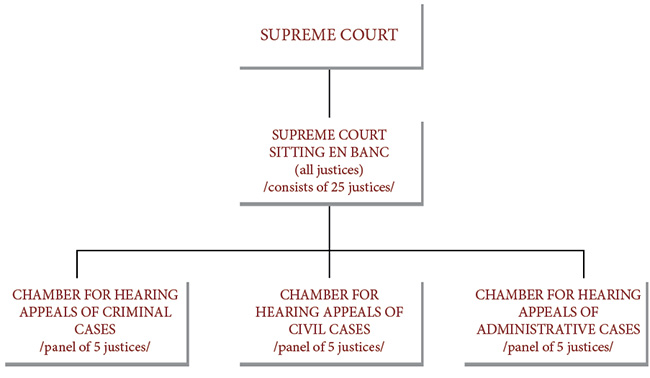

Supreme Court of Mongolia
The Supreme Court of Mongolia is the highest court in the judicial system of Mongolia and is generally the court of last resort for non-constitutional matters. It is established by Article 48(1) of the Constitution of Mongolia.
The 1992 Constitution states in Article 50(1) that the Supreme Court of Mongolia shall be the highest judicial organ which has powers to adjudicate through a first instance procedure the criminal cases and legal disputes assigned under its jurisdiction by law; exam the decisions of lower-instance courts through a procedure of appeal or cassation (review); exam and make the decision on matters regarding the protection of law, human rights and freedoms prescribed therein, as transferred from the Constitutional Tsets (Constitutional Court) or by the Prosecute General; issue the official interpretations for correct application of all law, except for Constitution; make decision on all other matters assigned by law.
Justices of the Supreme Court of Mongolia are appointed by the President of Mongolia after being presented by the Judicial General Council.
According to the Law on Courts of Mongolia the Supreme Court composed of Chief Justice and 24 justices, and has specialized chambers on criminal, civil, and administrative matters.
Presently, the Justices manage cases through three separate chambers: a Chamber for Criminal Cases, a Chamber for Administrative Cases and a Chamber for Civil Cases.
